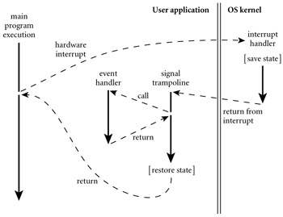

|
|
|
|
8.7 Events
An event is something to which a running program (a
process) needs to respond, but which occurs outside the program, at an
unpredictable time. The most common events are inputs to a graphical user
interface (GUI) system: keystrokes, mouse motions, button clicks. They may also
be network operations or other asynchronous I/O activity: the arrival of a
message, the completion of a previously requested disk operation.
On the CD In the I/O operations discussed in Section 7.9, and in Section 7.9.3 in particular, we
assumed that a program looking for input will request it explicitly, and will
wait if it isn't yet available. This sort of synchronous (at a specified
time) and blocking (potentially wait-inducing) input is generally not
acceptable for modern applications with graphical interfaces. Instead, the
programmer usually wants a handler―a special subroutine―to be invoked
when a given event occurs. Handlers are sometimes known as callback
functions, because the run-time system calls back into the main program instead
of being called from it. In an object-oriented language, the callback
function may be a method of some handler object, rather than a static
subroutine.
Traditionally, event handlers were implemented in sequential
programming languages as "spontaneous" subroutine calls, typically
using a mechanism defined and implemented by the operating system, outside the
language proper. To prepare to receive events through this mechanism, a
program―call it P―invokes a setup handler library routine, passing as
argument the subroutine it wants to have invoked when the event occurs.
At the hardware level, asynchronous device activity during P's
execution will trigger an interrupt mechanism that saves P's registers,
switches to a different stack, and jumps to a predefined address in the OS
kernel. Similarly, if some other process Q is running when the interrupt
occurs (or if some action in Q itself needs to reflected to P as
an event), the kernel will have saved P's state at the end of its last
time slice. Either way, the kernel must arrange to invoke the appropriate event
handler despite the fact that P may be at a place in its code where a
subroutine call cannot normally occur (e.g.,
it may be halfway through the calling sequence for some other subroutine).
Example 8.58: Signal
trampoline
|
|
Figure
8.7 illustrates the typical implementation of spontaneous subroutine
calls―as used, for example, by the Unix signal mechanism. The language
run-time library contains a block of code known as the signal trampoline.
It also includes a buffer writable by the kernel and readable by the runtime.
Before delivering a signal, the kernel places the saved state of P into
the shared buffer. It then switches back to P's user-level stack and
jumps into the signal trampoline. The trampoline creates a frame for itself in
the stack and then calls the event handler using the normal subroutine calling
sequence. (The correctness of this mechanism depends on there being nothing
important in the stack beyond the location specified by the stack pointer
register at the time of the interrupt.) When the event handler returns, the
trampoline restores state (including all registers) from the buffer written by
the kernel, and jumps back into the main program. To avoid recursive events,
the kernel typically disables further signals when it jumps to the signal
trampoline. Immediately before jumping back to the user program, the trampoline
performs a kernel call to reenable signals. Depending on the details of the
operating system, the kernel may buffer some modest number of signals while
they are disabled, and deliver them once the handler reenables them.

Figure 8.7: Signal delivery through
a trampoline.
When an interrupt occurs (or when another process performs an operation that
should appear as an event), the main program may be at an arbitrary place in
its code. The kernel saves state and invokes a trampoline routine that in turn
calls the event handler through the normal calling sequence. After the event
handler returns, the trampoline restores the saved state and returns to where
the main program left off.
|
|
In practice, most event handlers need to share data
structures with the main program (otherwise, how would they get the program to
do anything interesting in response to the event?). We must take care to make
sure neither the handler nor the main program ever sees these shared structures
in an inconsistent state. Specifically, we must prevent a handler from looking
at data when the main program is halfway through modifying it, or modifying
data when the main program is halfway through reading it. The typical solution
is to synchronize access to such shared structures by bracketing blocks
of code in the main program with kernel calls that disable and reenable
signals. We will use a similar mechanism to implement threads in Section 12.2.4. More general forms of synchronization will
appear in Section 12.3.
On the CD In modern programming languages and run-time systems,
events are often handled by a separate thread of control, rather than by
spontaneous subroutine calls. (This use of threads is closely related to the
implementation of remote procedure calls, which we will study in Section
12.5.4.) With a separate handler thread, input can again be synchronous: the handler
thread makes a system call to request the next event, and waits for it to
occur. Meanwhile, the main program continues to execute. If the program wishes
to be able to handle multiple events concurrently, it may create multiple
hander threads, each of which calls into the kernel to wait for an event. To
protect the integrity of shared data structures, the main program and the
handler thread(s) will generally require a full-fledged synchronization
mechanism, as discussed in Section 12.3: disabling signals will not suffice.
Example 8.59: An event
handler in C#
|
|
Many contemporary GUI systems are thread-based. Examples
include the OpenGL Utility Toolkit (GLUT), the GNU Image Manipulation Program
(GIMP) Tool Kit (Gtk), the Java Swing library, Windows Forms, and the newer
.NET Windows Presentation Foundation (WPF). In C#, an event handler is an
instance of a delegate type―essentially, a list of subroutine closures (Section 3.6.3). Using Gtk#, the standard GUI for the Mono
project, we might create and initialize a button as follows.
void
Paused(object sender, EventArgs a) {
// do whatever needs doing
when the pause button is pushed
}
...
Button
pauseButton = new Button("pause");
pauseButton.Clicked
+= new EventHandler(Paused);
Button and EventHandler are defined in the Gtk# library. Button is a class that represents the graphical widget. EventHandler is a delegate type, with which Paused is compatible. Its first argument indicates the object that
caused the event; its second argument describes the event itself. Button.Clicked is the button's event
handler: a field of EventHandler type. The += operator adds a new closure to the delegate's list.[7] The graphics library arranges for a
thread to call into the kernel to wait for user interface events. When our
button is pushed, the call will return from the kernel, and the thread will
invoke each of the entries on the delegate list.
|
|
Example 8.60: An
anonymous delegate handler
|
|
As described in the Section 3.6.3, C# allows the handler to be specified more
succinctly as an anonymous delegate:
pauseButton.Clicked
+= delegate(object sender, EventArgs a) {
// do whatever needs doing
};
|
|
Example 8.61: An event
handler in Java
|
|
Other languages and systems are similar. In Java Swing, an
event handler is typically an instance of a class that implements the ActionListener interface, with a method named actionPerformed:
class
PauseListener implements ActionListener {
public void
actionPerformed(ActionEvent e) {
//
do whatever needs doing
}
}
...
JButton
pauseButton = new JButton("pause");
pauseButton.addActionListener(new
PauseListener());
|
|
Example 8.62: An
anonymous inner class handler
|
|
The lack of syntactic sugar for delegates makes this
slightly more verbose than it was in C#, but most of the simplicity can be
regained by using an anonymous inner class:
pauseButton.addActionListener(new
ActionListener() {
public void
actionPerformed(ActionEvent e) {
//
do whatever needs doing
}
});
Here the definition of our PauseListener class is embedded, without the name, in a call to new, which is in turn embedded in the argument list of addActionListener. Like an anonymous delegate in C#, an anonymous class in
Java can have only a single instance.
|
|
The action performed by a handler needs to be simple and
brief, so the handler thread can call back into the kernel for another event.
If the handler takes too long, the user is likely to find the application nonresponsive.
If an event needs to initiate something that is computationally demanding, or
that may need to perform additional I/O, the handler may create a new thread to
do the work; alternatively, it may pass a request to some existing worker
thread.
41.
What was the first high-level programming language to
provide coroutines?
42.
What is the difference between a coroutine and a thread?
43.
Why doesn't the transfer library routine need to
change the program counter when switching between coroutines?
44.
Describe three alternative means of allocating coroutine
stacks. What are their relative strengths and weaknesses?
45.
What is a cactus stack? What is its purpose?
46.
What is discrete event simulation? What is its
connection with coroutines?
47.
What is an event in the programming language sense of
the word?
48.
Summarize the two main implementation strategies for events.
49.
Explain the appeal of anonymous delegates (C#) and anonymous
inner classes (Java) for handling events.
[7]Technically, Clicked is of event EventHandler type. The event modifier makes the delegate private, so it can be invoked
only from within the class it which it was declared. At the same time, it
creates a public property, with add and remove accessors, similar to the put
and get accessors mentioned in Section 9.1.
These allow code outside the class to add handlers to the event (with +=)
and remove them from it (with -=).